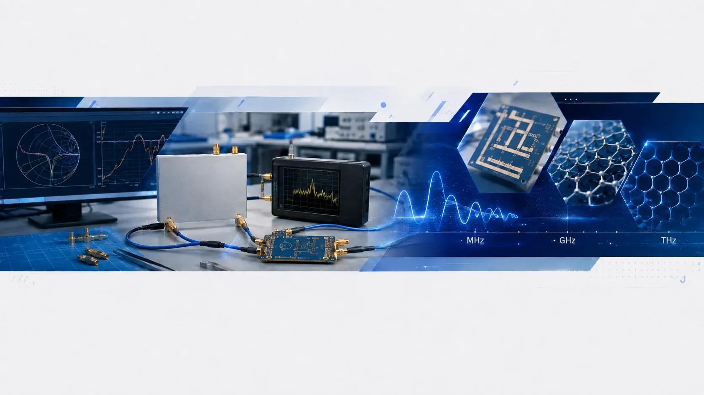
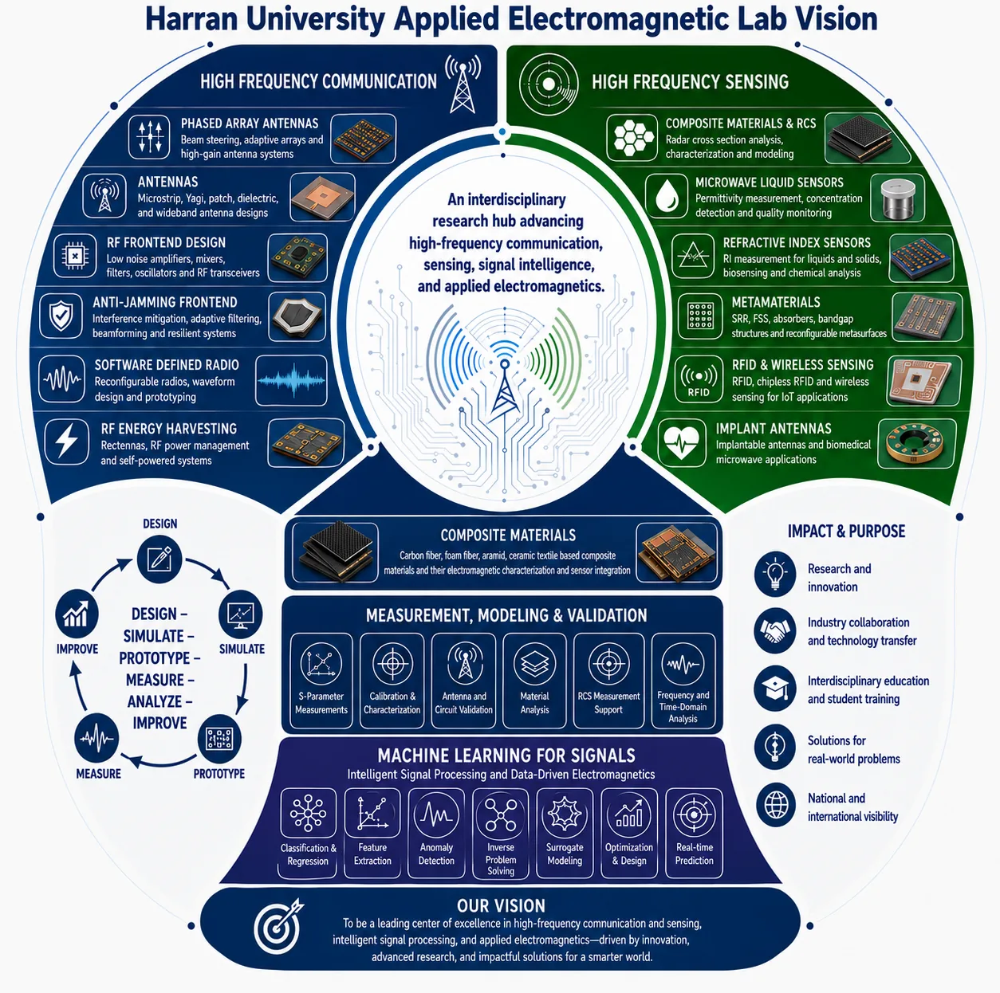
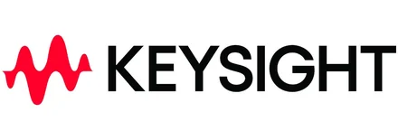
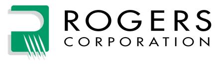
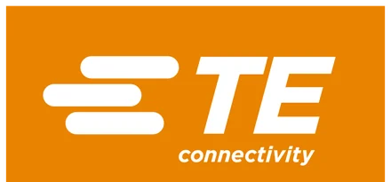
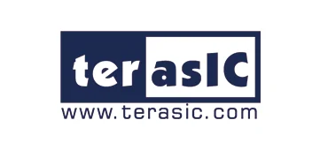
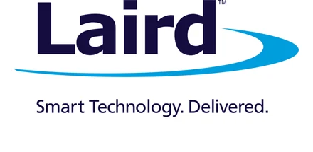
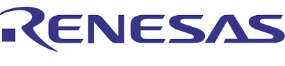

High-Frequency Communication
Phased arrays, microstrip and dielectric antennas, RF front ends, anti-jamming architectures, software-defined radio and RF energy harvesting.

HARRAN UNIVERSITY · ELECTRICAL & ELECTRONICS ENGINEERING
Research in applied electromagnetics from RF and microwave frequencies to emerging THz systems.
The Applied Electromagnetics Lab develops research in high-frequency communication, electromagnetic sensing, computational electromagnetics, and signal intelligence, with an emphasis on physically grounded modelling, measurement, and reproducible analysis.
Lab vision
The laboratory vision integrates high-frequency communication and sensing with materials, measurement, validation, and machine learning for signals. The objective is to connect electromagnetic mechanisms with measurable, reproducible, and interpretable engineering outcomes.

Research lead
Lab Lead & Principal Investigator
Electrical & Electronics Engineering · Harran University
Academic & professional profiles
Research areas
Research is organized around electromagnetic hardware, sensing mechanisms, computational modelling, and the interpretation of measured and simulated signals.
Phased arrays, microstrip and dielectric antennas, RF front ends, anti-jamming architectures, software-defined radio and RF energy harvesting.
Microwave liquid and refractive-index sensing, RFID sensing, metamaterials, composite characterization and biomedical electromagnetic concepts.
Full-wave simulation, material modelling, geometry transformation, surrogate modelling, optimization and inverse electromagnetic problems.
Feature extraction, classification, anomaly detection, uncertainty-aware analysis and physics-guided interpretation of electromagnetic measurements.
Capabilities
The laboratory emphasizes calibrated and documented experiments, numerical modelling, and reproducible analysis under realistic instrumentation and fabrication constraints.
VNA-based characterization of resonators, antennas, materials and RF networks with calibration and de-embedding workflows.
Compact measurement arrangements, positioning systems, SDR platforms and application-specific RF experiments.
Dielectric, refractive-index and composite-material analysis across microwave and emerging high-frequency regimes.
Electromagnetic response of structured and composite materials with model-based interpretation and sensing integration.
Feature engineering, classification, uncertainty, benchmark design and inverse inference for electromagnetic datasets.
Fixtures, 3D-printed structures, embedded control and software automation supporting repeatable experiments.
Current research directions
These topics represent active research directions, experimental platforms, and methodological development within the laboratory.
Multi-resonant structures for material characterization using frequency, Q-factor, bandwidth and richer S-parameter features.
Passive and chipless electromagnetic signatures for structural state, material degradation and low-complexity interrogation.
Tunable graphene and metamaterial-inspired structures for refractive-index sensing and controlled wave–matter interaction.
Deformation-aware analysis of antennas and interconnects under bending, twisting and complex geometry changes.
Compact VNA, SDR and positioning workflows for reproducible laboratory-scale characterization and teaching.
Reusable datasets, benchmark protocols and physically interpretable features for electromagnetic sensing and signal-learning studies.
Research outputs
The laboratory website provides the technical research layer, while scholarly outputs remain explicitly attributed to the research lead.
Selected publications by the Lab Lead
Sensing and Imaging · 27(1) · Article 62
Optical and Quantum Electronics · 58 · Article 181
Harran University Journal of Engineering · 10(3) · 172–183
IEEE Transactions on Antennas and Propagation · 71(6) · 4714–4723
IEEE Transactions on Antennas and Propagation · 70(8) · 6377–6387
Software & data
Scripts and workflows supporting RF measurements, positioning, data organization and reproducible analysis.
Structured electromagnetic measurement and simulation datasets for validation, comparison and data-driven studies.
Evaluation protocols connecting physical sensing problems with repeatable feature extraction and model comparison.
Student research & opportunities
Undergraduate and graduate students interested in RF, microwave sensing, antennas, SDR, computational electromagnetics, or signal processing may participate through supervised research projects when suitable topics and laboratory capacity are available.
Research inquiry →Acknowledgements & support
Laboratory equipment support is acknowledged separately from complimentary samples, materials, software access, and development platforms.
We gratefully acknowledge the support of companies that contribute to our lab by providing low-frequency Digital Multimeters, Waveform Generators, InfiniiVision 1000 X-Series Oscilloscope, and a DC power supply with three outputs.

We gratefully acknowledge the support of companies that contribute to our lab by providing complimentary samples and development boards.





Contact & collaboration
The laboratory welcomes research collaborations that connect electromagnetic modelling, sensing, RF hardware, materials, measurement, and intelligent signal processing.